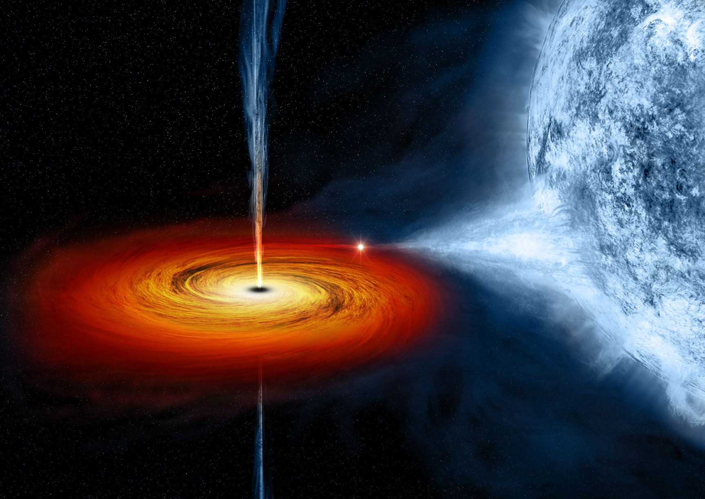
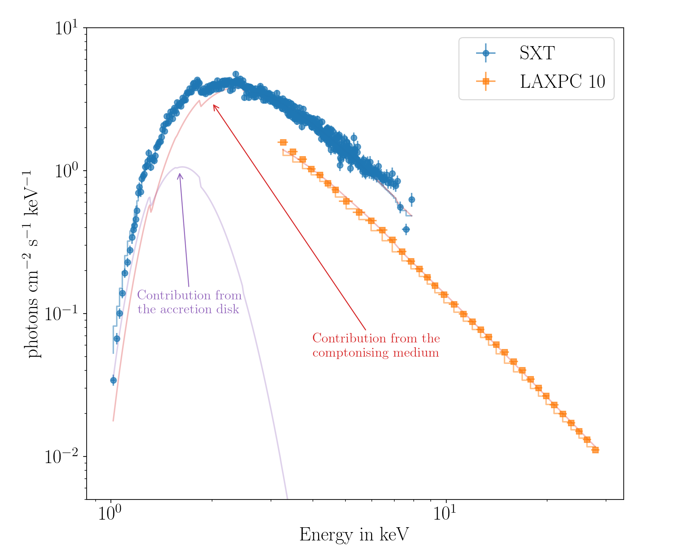

Understanding the emissions in Black hole binaries
Yash Bhargava from Inter-University Centre for Astronomy and Astrophysics (IUCAA), Pune, takes us through the journey of the death of a star in this wonderful article about his work.
To understand what I do, I will have to take you on a journey of what happens after a star dies. Yes. Stars also die. Depending on its mass and composition, a star can die either by blooming into a red giant and then dispersing its external shell to leave a bright core at the centre, known as a White Dwarf, or by a gigantic explosion which can typically outshine a Galaxy - leaving either an extremely dense ball made almost entirely of Neutrons (also known as Neutron Stars) or an enigmatic Black hole at the centre. It becomes more interesting if the original star was already revolving around another star also known as the companion star. If the companion is close and large enough, the compact star (either White dwarf, Neutron star, or Black hole) is in a position to capture material from the companion. When matter from the companion is captured in the gravitational well of the compact object, it doesn’t simply fall towards the compact object. The matter would have an initial velocity which would force it to go into an orbit around the compact object. After a huge number of collisions, a fraction of matter would eventually form a disk around the compact object, something similar to the Rings of Saturn but with a tiny but very important twist. The matter in this disk is actually moving inwards while the particles in Saturn’s ring are orbiting the planet in a very stable manner. Hence these disks are called accretion disks. As the matter moves inwards closer to the compact object, it releases the gravitational potential energy. The closer the matter can get to the compact object, the more gravitational energy is available to be released. The conversion of the gravitational potential energy in the disk is a very efficient mechanism making these sources extremely bright. The amount of energy being expelled is quite large, which raises the temperature of the matter so much that it emits radiation peaking in X-rays. Observing X-rays from ground-based observatories is impossible as the incoming radiation is blocked by the atmosphere. Thus scientists have sent many observatories to space to observe and study these enigmatic sources. One such observatory is AstroSat, which is India’s first multi-wavelength mission. It has 5 co-pointed instruments onboard to probe different properties of the target.

Figure 1: An artist’s impression of accretion around the Black hole binary Cyg X-1. The typical emission from the accretion disk is in X-rays while the jet emits from Radio to X-ray wavelengths. (Credits: Chandra X-ray Observatory )
{kind=link}
Black hole Binaries are systems of binary stars in which the compact object is a Black hole. As compared to Neutron Star and White Dwarf, Black holes are more dense and compact, thus presenting a deeper gravitational potential well. Close to the Black hole, the extreme gravity, and relativistic effects dominate. Thus these systems are excellent laboratories to probe extreme conditions that are impossible to recreate on Earth. They also show very unique features which have not been completely understood to date. One of these features is a Quasi-Periodic Oscillation (QPO), which is like an oscillation with many close-by frequencies occurring simultaneously. In contrast, many Neutron star binaries show pulsations that correspond to the rotation of the Neutron star and have only a single frequency, thus making them a great clock. The origin of QPO is quite uncertain as some observations indicate that it is a geometrical effect while others imply it is a resonance feature. Previous studies have indicated that the QPO might be related to precession in the accretion disk. But no single model can fully explain the properties of QPOs.
Figure 2: An example of a Quasi-periodic oscillation observed in MAXI J1535-571. The plot shows the power density spectrum, which is the square of the Fourier transform of the intensity variations with time (often called the light curve in the astronomical community). The QPO is highlighted as the grey shaded function. The features at harmonic frequencies (twice & half the QPO frequency) can also be seen. )
As part of my research, I have studied different Black hole binary systems which have provided valuable insight into the dynamics of accretion disks. One of these systems, MAXI J1535-571 is quite intriguing. It was discovered in September 2017 and was one of the brightest objects in the X-ray sky when it went into an outburst. AstroSat stared at the source for 5 consecutive days and using the instruments on board we have a unique insight into the source. We have modeled the energy spectrum (which is a count of how many photons of different energies are we seeing) of the source using the Soft X-ray Telescope (SXT) and the Large Area X-ray Proportional Counter (LAXPC), which tells us that this source has a high-temperature accretion disk and a cloud of electron which intercepts some of the energy from the disk and then scatters it to higher energies. The cloud of the electrons can be characterized by the slope of the high-energy spectrum seen by LAXPC. We find that during the observation, this slope is not constant and fluctuates about a mean value.

Figure 3: The X-ray spectrum of MAXI J1535-571. The emission from this source can be characterized by the multi-temperature accretion disk and Compton up-scattering of the accretion disk photons by a thermal cloud of electrons. The total emission was absorbed by neutral Hydrogen close to the source before reaching us. The emission from the Compton up-scattering of the photons depends on the electron temperature and the optical depth and manifests itself as the slope of the spectrum. )
LAXPC is a high time resolution instrument and allows us to measure when a photon strikes the detector with an accuracy of 10 microseconds. Thus we can determine if there are any fast oscillations occurring in the source. In this particular case, we see a very prominent QPO which also changes its frequency about a mean value as the observation progresses. We also measure the total output of the source which is dependent on the total accretion rate of the system and we find that it is increasing as time progresses. Models of QPO predict that, typically, the peak frequency of a QPO is linked with the accretion rate; as the accretion rate increases, the QPO frequency also increases. We find that for this source this is not the case for at least the duration of our observation. We see a very strong correlation between the variation in the QPO frequency and the spectral slope indicating that the origin of the QPO is tightly linked with the component responsible for shaping the spectrum. Whenever the QPO frequency increases the slope increases and when one decreases the other is also seen to decrease. These results led us to conclude that the QPO is closely tied to the cloud of electrons instead of the accretion disk where the previous theories expect it to arise from. This work questions the existing models of QPOs and accretion and demands the revision of long-held ideas. This work and observations like this provide us with a window into a tiny region, extremely close to a Black hole that cannot be yet imaged with the current technologies. Only recently, scientists were able to combine the observations from radio telescopes across the world to create the first picture of a much larger black hole at the centre of the galaxy. But to understand the environment around a black hole in a binary system, indirect measurements (like the work described here) using the spectral and timing properties of the source will remain the primary method of investigation.
Note: This article is submitted for DST-AWSAR award.
Original paper: Spectro-timing analysis of MAXI J1535–571 using AstroSat
First Author: Yash Bhargava
Co-authors: Tomaso Belloni, Dipankar Bhattacharya, Ranjeev Misra
First author’s Institution: Inter-University Centre for Astronomy and Astrophysics (IUCAA), Pune